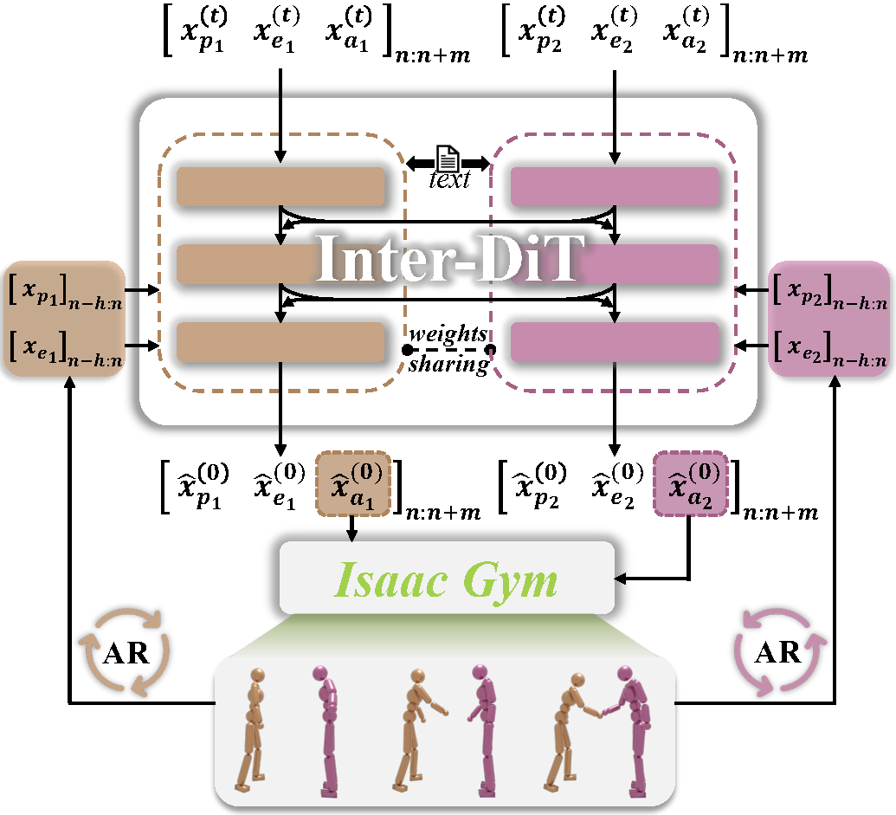
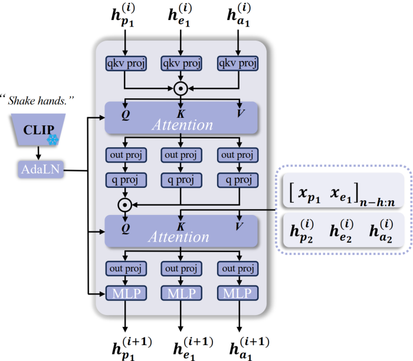

Humanoid agents are expected to emulate the complex coordination inherent in human social behaviors. However, existing methods are largely confined to single-agent scenarios, overlooking the physically plausible interplay essential for multi-agent interactions. To bridge this gap, we propose InterAgent, the first end-to-end framework for text-driven physics-based multi-agent humanoid control. At its core, we introduce an autoregressive diffusion transformer equipped with multi-stream blocks, which decouples proprioception, exteroception, and action to mitigate cross-modal interference while enabling synergistic coordination. We further propose a novel interaction graph exteroception representation that explicitly captures fine-grained joint-to-joint spatial dependencies to facilitate network learning. Additionally, within it we devise a sparse edge-based attention mechanism that dynamically prunes redundant connections and emphasizes critical inter-agent spatial relations, thereby enhancing the robustness of interaction modeling. Extensive experiments demonstrate that InterAgent consistently outperforms multiple strong baselines, achieving state-of-the-art performance. It enables producing coherent, physically plausible, and semantically faithful multi-agent behaviors from only text prompts.


We focus on physics-based text-driven control for two interacting humanoid agents. In single-agent settings, actions depend mainly on an agent’s own state (proprioception). In contrast, multi-agent scenarios introduce additional challenges: each agent’s actions are influenced not only by its intrinsic dynamics but also by the other’s states and behaviors (exteroception). To this end, we propose a novel framework InterAgent. It incorporates an Interaction Diffusion Transformer (Inter-DiT), composed of two cooperative, weight-sharing networks under an autoregressive diffusion paradigm, to effectively model interactive dynamics. Given the inherent heterogeneity among proprioception, exteroception, and action, we treat them as distinct modalities. To handle these modalities in a coordinated manner, Inter-DiT adopts a multi-stream architecture that enables decoupled yet cooperative modeling and enhances overall performance. Moreover, we propose a novel and effective exteroception representation, interaction graph (IG), and devise a tailored edge-based sparse attention mechanism on the exteroception stream to selectively suppress interaction-irrelevant connections and effectively highlight salient inter-agent relations, based on its sparsity nature.